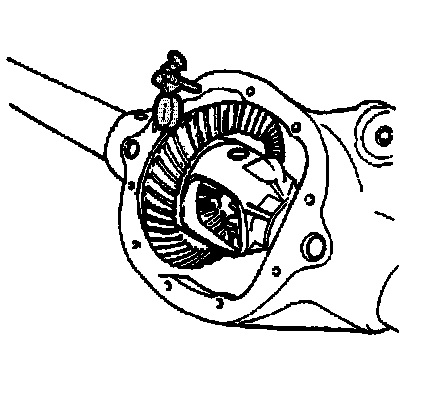

Backlash Adjustment (9.5 Inch Axle)
Backlash Adjustment (9.5 Inch Axle)
Tools Required
^ J 8001 Dial Indicator Set
^ J 24429 Side Bearing Backlash Spanner
^ J 25025 Guide Pins
Important:
^ Ensure that the side bearing surfaces in the axle housing are clean and free of burrs. If the original bearings are to be reused, the original bearing cups must also be used.
^ The differential side bearings must be initially preloaded in order to determine the backlash of the gear set. After the backlash is set, the final bearing preload is set.

1. Measure the rotating torque of the drive pinion and differential assembly using an inch-pound torque wrench.
The rotating torque of the drive pinion and differential assembly should be 3.4-6.2 Nm (30-55 lb in) for new bearings or 2.8-5.1 Nm (25-45 lb in) for used bearings.
2. If the rotating torque is too low, tighten the differential bearing adjuster nut in 1 slot increments until the specified rotating torque is obtained.
3. If the rotating torque is too high, loosen the differential bearing adjuster nut in 1 slot increments until the specified rotating torque is obtained.
4. If the specification for the rotating torque of the drive pinion and differential assembly cannot be obtained by adjusting the differential bearing adjuster nut, remove the differential assembly, measure the rotating torque of the drive pinion and adjust as necessary. Refer to Differential Replacement and Drive Pinion Bearings Replacement.

5. Install the J 25025-1 and the J 8001-3 to the axle housing as shown.
6. Place the indicator stem of the J 8001-3 at the heel end of a gear tooth.
7. Set the J 8001-3 so that the stem is aligned with the gear rotation and perpendicular to the tooth angle.
8. Preload the dial of the J 8001-3 approximately 3/4 of a turn.
Align the needle and the dial face of the J 8001-3 to ZERO.
9. While holding the drive pinion stationary, move the ring gear back and forth.
Measure and record the backlash.
10. Repeat the measuring procedure at eight points around the ring gear.
The difference between the backlash at all of the measuring points should not vary by more than 0.05 mm (0.002 in).
11. If the difference between the backlash at all of the measuring points varies by more than 0.05 mm (0.002 in), inspect for the following conditions:
^ Burrs
^ A distorted case flange
^ Uneven bolting
12. If the difference between all the measuring points is within specifications, the backlash at the minimum lash point measured should be:
The backlash between the ring gear and the drive pinion should be between 0.08-0.25 mm (0.003-0.010 in) with a preferred backlash of 0.13-0.18 mm (0.005-0.007 in).
Important: Increasing or decreasing the shim thickness by 0.05 mm (0.002 in) will change the backlash adjustment approximately 0.03 mm (0.001 in).
13. If the backlash is not within specifications, adjust the backlash by performing the following procedure:
1. Remove the differential bearing adjuster nut retainer bolt.
2. Remove the differential bearing adjuster nut retainer.
3. Loosen the bearing cap bolts.
Do not remove the bearing cap bolts.
4. Loosen the differential bearing adjuster nut using the J 24429.
5. Remove the differential side bearing shim.
6. Measure the thickness of the shim.
Measure the shim in 3 locations.
7. Calculate the average of the 3 measurements.
Record the measurement.
8. If the backlash is too small, select a smaller shim than the one that was removed. For example, to increase the backlash by 0.05 mm (0.002 in), select a shim that is 0.10 mm (0.004 in) thinner than the shim that was removed.
9. If the backlash is too large, select a larger shim than the one that was removed. For example, to increase the backlash by 0.05 mm (0.002 in), select a shim that is 0.10 mm (0.004 in) thicker than the shim that was removed.
10. Install the shim.
14. Tighten the differential bearing adjuster nut using the J 24429 until the differential bearing adjuster nut is seated against the bearing cup.
15. Once the differential bearing adjuster is seated against the differential bearing, tighten the differential bearing adjuster nut using the J 24429 the following additional amounts:
^ For used bearings, tighten the differential bearing adjuster nut an additional 2 slots.
^ For new bearings, tighten the differential bearing adjuster nut an additional 3 slots.
16. Tighten the differential bearing cap bolts.
Tighten the bearing cap bolts to 85 Nm (63 lb ft).
17. Recheck the backlash following the steps above to verify that the backlash is within specifications.
18. Install the differential bearing adjuster nut retainer.
19. Install the differential bearing adjuster nut retainer bolt.
Tighten the differential bearing adjuster nut retainer nut bolt to 26 Nm (19 lb ft).
20. Measure the drive pinion and differential case side bearing preload and adjust, if necessary following the steps above.
21. Once the backlash and bearing preload is correct, perform a gear tooth contact pattern check in order to ensure proper alignment between the ring and pinion gears. Refer to Gear Tooth Contact Pattern Inspection.